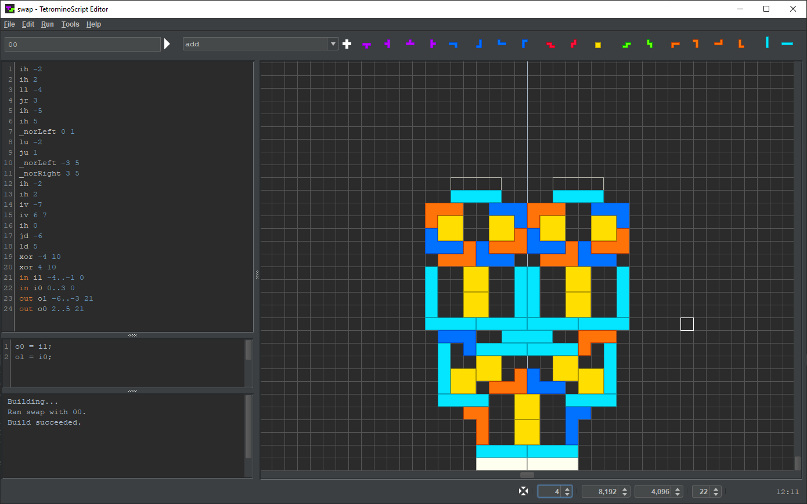
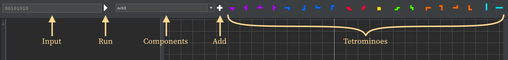

Contents > Applications > TetrominoScript Editor
User Interface
As shown below, TSE is a single-window application segmented into regions. The largest region is the playfield, the grid where the user assembles circuits. On the left, from top-to-bottom, are the TS program, the JS snippet, and the output messages region.

The toolbar provides controls for TS program execution and element insertion:

- - A user-entered binary string where each bit represents the state of an input node.
- - Executes the TS program with the provided input node values. and F6 do the same.
- - Available components.
- - Selects an available component. Click on a grid cell to insert it into the playfield.
- - Selects a tetromino in a particular orientation. Click on a grid cell to insert it into the playfield.
The status bar provides grid controls:

- - Moves the origin to center-bottom by centering the horizontal scrollbar and bottoming the vertical scrollbar.
- - Recursive rendering depth, the level of displayed detail.
- - Number of cells wide.
- - Number of cells high.
- - Grid cell size. Turn the scroll wheel to change it.
- - Coordinates of the cell at which the mouse cursor points.